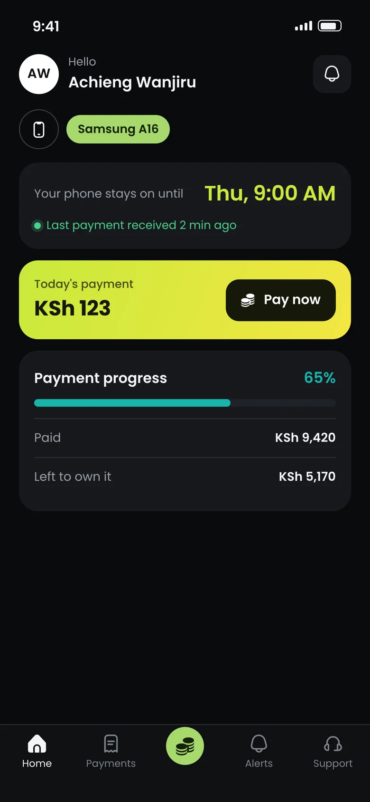
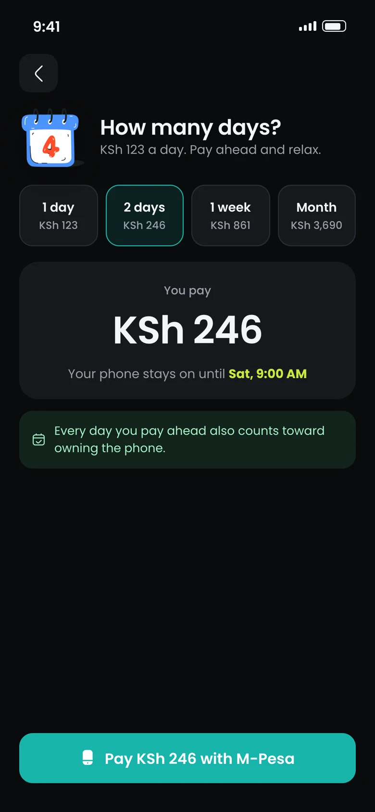
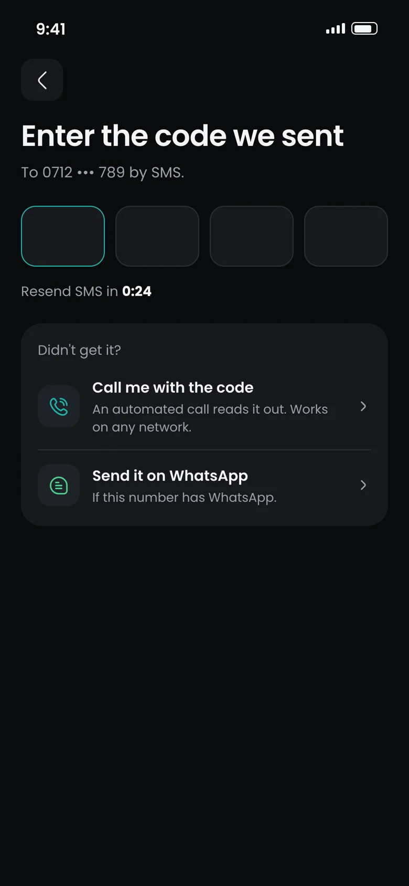
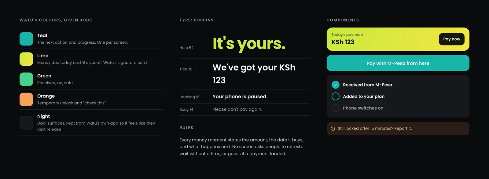

Watu: pay, unlock, own it
Watu finances phones and motorbikes for people who can't pay upfront, and its whole model runs on one loop: pay, stay unlocked, own the asset. I read 1,052 Play Store reviews across Kenya and Nigeria, checked Watu's latest release, its help pages, TikTok and the press, and found the loop breaking at three moments. I designed and prototyped the fixes design owns, in Watu's own visual language.
41 seconds, recorded from the working prototype below.
Four moments,
tap through each one.
Pick a moment above the phone. The orange ring shows what to tap next.
337 unhappy reviews,
two journeys that design can fix.
I loaded 540 Kenyan and 512 Nigerian Google Play reviews, kept the 337 rated one to three stars, and tagged what each complained about. Tap a bar to read what people said, in my words.
Reviews show where to look, not how big each problem is: many low ratings are one word long, and Google lists them by relevance, not at random. So I checked every finding against what Watu and its customers say elsewhere.
Beyond the Play Store
- Still happening after the latest release. Watu's Kenya app was updated on 26 August 2026 (a resource centre, payment-reminder notifications). On 17 September a reviewer wrote that they still can't use the app while the phone is locked.
- Missing from Watu's own help. The Kenya support FAQ covers fees, paying from another number, logbooks and transaction history, but not locked devices, the problem customers raise most.
- So customers turn to TikTok. TikTok has topic pages such as "Procedure to unlock Watu credit phones", and Watu posts its own unlock walkthroughs there.
- Bikes wait overnight. A Kenyan payment guide says Watu unlocks financed motorbikes within two hours of payment during business hours, and the next morning outside them. For a boda rider, that is a lost shift.
- The stakes are public. Uganda's Daily Monitor (23 February 2026) reported riders' fear of abrupt repossessions; Watu Uganda's spokesperson said recovery is a last resort, after reminders and repayment schedules. Clear payment and unlock screens are how a lender proves that.
- The current app shows it. Watu's own store screenshots include a manual "Refresh" button on the home screen: payments don't appear by themselves.
Design can fix part of this.
Here's where the line is.
The four numbers I'd ask Watu's data team for first: median minutes from M-Pesa confirmation to unlock, by hour of day; the share of locks where nothing was owed; how many customers pay the same amount twice in an hour; and the login-code delivery rate by network.
Three decisions,
each tied to the evidence.
Three fixes design owns
from start to finish.

No more Refresh button
Watu's home screen asks customers to refresh to see payments. The fix: payments appear on their own, with "Last payment received 2 min ago" and the exact time the phone stays on until.

Show what the payment buys
Watu already lets customers slide to pick days. The fix: name the date. "KSh 246 keeps your phone on until Sat, 9:00 AM" is a decision people can make in one look.

A code that always arrives
Trouble getting in, mostly login codes that never arrive, is the biggest cluster in Nigeria's reviews. The fix: after the SMS timer, offer a voice call that reads the code out, or WhatsApp.
Designed in Watu's language,
tightened with the best of fintech.
I kept what Watu's customers already know from the real app: the dark theme, teal actions, the lime "today's payment" card, the centre Payments tab, and Poppins. Then I tightened it with references from Mobbin: the payment tracker follows MoonPay and Too Good To Go, progress follows Afterpay, and the finish line takes its dark, bold celebration from Wise and its sticker-and-confetti moment from Monzo.

Testing it now,
and what should move if it shipped.
I'm testing the prototype with five people who pay for a phone or bike in instalments, asking one question per moment, such as "Has your payment landed? Should you pay again?" Results go here as soon as they're in.
Sources: Google Play reviews of Watu Kenya and Watu Nigeria (loaded October 2026); Watu Kenya release notes and support FAQ; TikTok topic pages; paybillke.com payment guides; Daily Monitor, 23 February 2026. Paybill 650880 is Watu Kenya's published Paybill; names and amounts in the screens are samples. Stickers by vectorsmarket15 from Flaticon; icons: Uicons by Flaticon. Watu is a trademark of its owner; this is an independent concept.